Shane Mykal Stark
I keep networks and infrastructure running where downtime isn't an option, from 24/7 plant floors to university data centers, and I've led the teams that do it.
Ten years in IT. Today I'm the on-site IT engineer for a continuous-production plant with about 300 endpoints and 120 wireless access points, working across the network, systems and the PLC-connected equipment production depends on. Before that, I spent six years supporting university networks across data centers and campuses, and from 2020 also led a regional team of field technicians. At home I build and document lab projects, from network segmentation to an OT learning environment.
- 6,500+users on networks I was responsible for
- Up to 14field technicians led directly
- 63.5%fewer label-printing tickets in my Green Belt project
U1IT Engineer, 24/7 manufacturing plantAbout 300 endpoints, 120 access points
U26 years of data center & campus network infrastructureNetwork specialist 2018–2024 · Regional field supervisor 2020–2024
U36,500+ users across 5 directly assigned campuses24/7/365 responsibility in 3 states; supported specialists across 20+ more campuses
U414 field specialists supervisedUp to nearly 30 during vacancies
U563.5% fewer label-printing ticketsLean Six Sigma Green Belt project I led
U6OT lab: simulated sorting linePLC, HMI, SCADA and historian, in development
U7Local AI engineering platformDeployed and in daily use
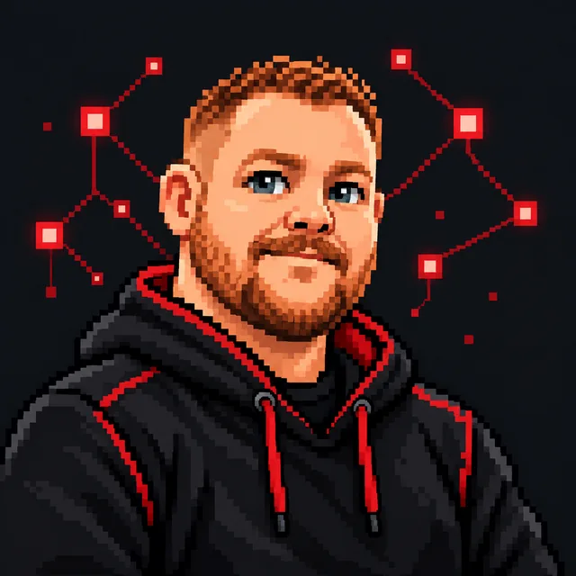
> Point at a unit to read it. Select it to jump to the details.
Start Here
Pick the path closest to the role you're hiring for. Each one leads to the case studies that matter most for it.
IT/OT & Manufacturing
- Bags weighed, but never labeled
- Keeping production data reachable
- OT learning environment Personal lab, in development
Technical Leadership & Operations
Results I Can Point To
Three changes with numbers behind them, from the plant floor, campus networks and field teams.
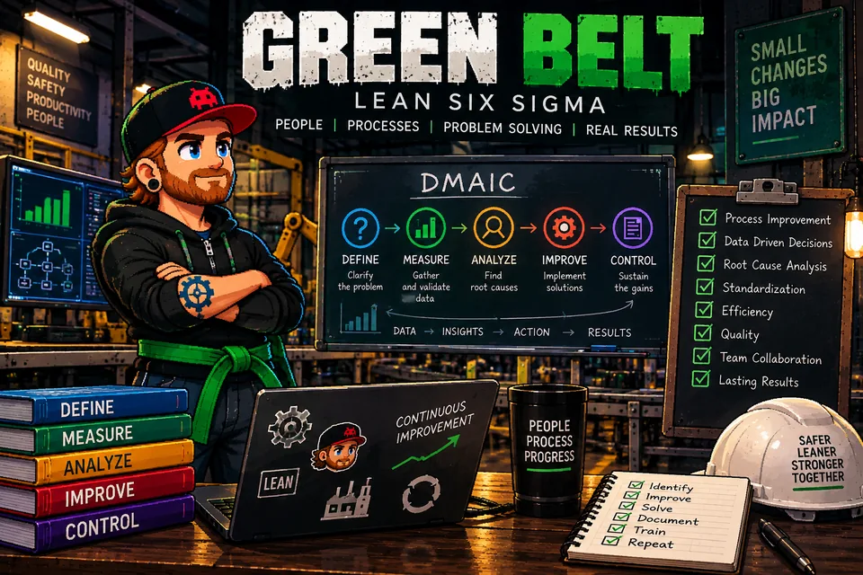
63.5%Fewer Label-Printing Tickets on the Production Floor
I led a Green Belt project: standard troubleshooting instructions, clear ownership and escalation, and operator training. Average monthly tickets fell from 6.3 to 2.3 during the improvement period.
Read the case studyUsers on Networks I Was Responsible For
I was directly responsible for five campuses across three states, 24/7/365. I also helped specialists across 20+ additional campuses, including residence halls and full administrative buildings. My team included 14 field specialists; reported SLA breaches remained under 5%.
Read the case studyFewer Repeat Service Calls
I coached 10 to 14 field technicians on diagnostics, root-cause troubleshooting and installation quality.
Read the case studyOn the Plant Floor
Problems I've worked where IT, production equipment and the people who run it meet. I focus on how systems depend on each other, not just the symptom in front of me.
Fault isolation, production line
Bags Weighed, but Never Labeled
- Weighing sensorWeighs each bag
- PLCDecides what to print
- Switch port and VLANCarries the PLC traffic
- LabelerPrints and applies
Symptom. Every bag is weighed, but the labeling step never completes. Run the checks I ran to find out why.
Replacing a Plant's Network While It Runs
- Project
- A facility-wide Cisco switching and wireless refresh in an active plant.
- What I did
- Deployed and replaced equipment, applied approved switchport configurations, helped roll out wireless, and validated connectivity.
- Constraint
- All work was scheduled around production requirements.
Keeping Production Data Reachable
- Systems
- SAP manufacturing workflows, PI Vision, industrial printing and labeling applications, and the Windows servers behind them.
- What I do
- Trace connectivity and availability problems through the network and server dependencies, and work with application owners to restore access.
Experience
Hands-on infrastructure and production-system support, distributed team leadership, and measured operational improvement.
- 2024–now
IT Engineer
Manufacturing IT and production technology support, 24/7 plant- Support a continuous-production plant: about 300 endpoints and more than 100 wireless access points on Cisco infrastructure.
- Troubleshoot network-connected production systems and industrial labeling equipment with engineering, maintenance, operations and vendors, including PLC-connected switch ports and VLANs.
- Investigate recurring faults with switch and controller logs, Cisco ISE data, packet captures and network telemetry.
- Led the Green Belt label-printing improvement: 63.5% fewer average monthly tickets.
- Took part in a facility-wide Cisco switching and wireless refresh, with infrastructure SLA breaches below 2.5%.
- 2018–2024
Network Specialist (2018–2024) & Regional Field Supervisor (2020–2024)
Higher education networks, Southeast region- 24/7/365 direct network responsibility for five campuses in three states, serving 6,500+ users; also assisted specialists at 20+ additional campuses, including residence halls and administrative buildings.
- Supervised and developed 14 field service specialists, and covered nearly 30 during vacancies while keeping hands-on network duties.
- Coordinated switching, wireless, authentication and Layer 1–3 escalations across NOC, engineering, ISPs and Cisco TAC.
- Participated in and coordinated 10+ network refresh and installation projects across environments with 1,000+ wireless access points and 250 switches; wrote Cisco firmware-upgrade training and standard troubleshooting documentation.
- Improved troubleshooting and support practices, cutting repeat callbacks by about 70%.
- Selected for a cross-functional product advisory board.
- 2016–2018
Smart Home Professional → Team Trainer
Vivint Smart Home · Licensed electronic security and connected systems- Installed, configured and troubleshot security, camera, sensor, thermostat, smart lock and home automation systems, combining independent field service with customer education and solution recommendations.
- Held an Alabama Electronic Security Board of Licensure (AESBL) credential during employment; progressed into hands-on technical training and field performance support.
- Coached 10–14 technicians, supported technical escalations and contributed to a 30% reduction in repeat service calls.
- Ranked among the top three Smart Home Professionals nationally against established performance KPIs.
Skills
What I use at work today, grouped the way a plant would need it, and what I'm building next.
Building now, in the PROTO lab
OT and Digital Engineering
Studying how control systems work together and what crosses the IT/OT boundary. In development; results will be published as each test is run.
- PLC and HMI communications
- Industrial Ethernet
- Industrial protocols
- SCADA and historian concepts
- Rockwell and Siemens architecture study
- IT/OT segmentation with Fortinet
- Proxmox virtualization
- Containers and Raspberry Pi
- Network discovery and telemetry
- Local AI for engineering workflows
Data Center & Campus Network Infrastructure
6 years supporting higher-education network infrastructure across university data centers and campus buildings: network cabinets, switches, cabling, connectivity and cabinet-level PDUs, plus telecom demarcation points, MDFs and IDFs. Hands-on network specialist throughout, with regional technician supervision from 2020. Read the case study
- Server hardware replacement
- Network equipment maintenance
- Structured cabling
- Hardware troubleshooting
- Onsite maintenance
- Regional infrastructure oversight
- Technician supervision
- Maintenance coordination
- Operational escalations
- Multi-site infrastructure availability
Manufacturing and IT/OT
Daily work in a 24/7 plant.
- Network-connected production systems
- PLC-connected network troubleshooting
- Industrial printing and labeling
- Working with electrical and automation engineers
- SAP
- PI Vision
- EASE.io
- Mobius
- Lean Six Sigma Green Belt
Networking
Layer 1 to Layer 3, campus and plant.
- Cisco Catalyst
- Cisco ISE
- Cisco WLC
- Ruckus
- VLANs and trunking
- TCP/IP, DNS, DHCP
- Infoblox IPAM
- Packet capture
- SolarWinds
Systems and Infrastructure
Servers, virtualization and hardware lifecycle.
- Windows Server
- Linux
- Active Directory
- VMware vSphere/ESXi
- Dell and HP enterprise hardware
- HPE iLO
- Structured cabling
Identity and Security
Access, endpoints and policy.
- Entra ID
- Okta
- CyberArk
- Microsoft Defender
- Conditional Access and MFA
- Intune
- SCCM/MECM
Operations
Service management and keeping things improving.
- ServiceNow
- Root cause analysis
- Incident and escalation management
- SLA performance
- Technical documentation
- Vendor coordination
Leadership
Distributed teams and training.
- Team supervision
- Coaching and mentoring
- Technical training
- Multi-site operations
- Cross-functional coordination
PROTO Engineering Lab
My independent lab for networking, virtualization, OT and certification study. Each project shows its status, and planned work is never presented as finished.
IT side built
Cisco switching and VLANs
Proxmox hosts
Storage and NAS
Local AI (AIIO)
WireGuard remote access
BoundaryFortinetOnly what the process needs crosses
Built and documentedPlanned, being builtAllowed trafficBlocked at the boundary
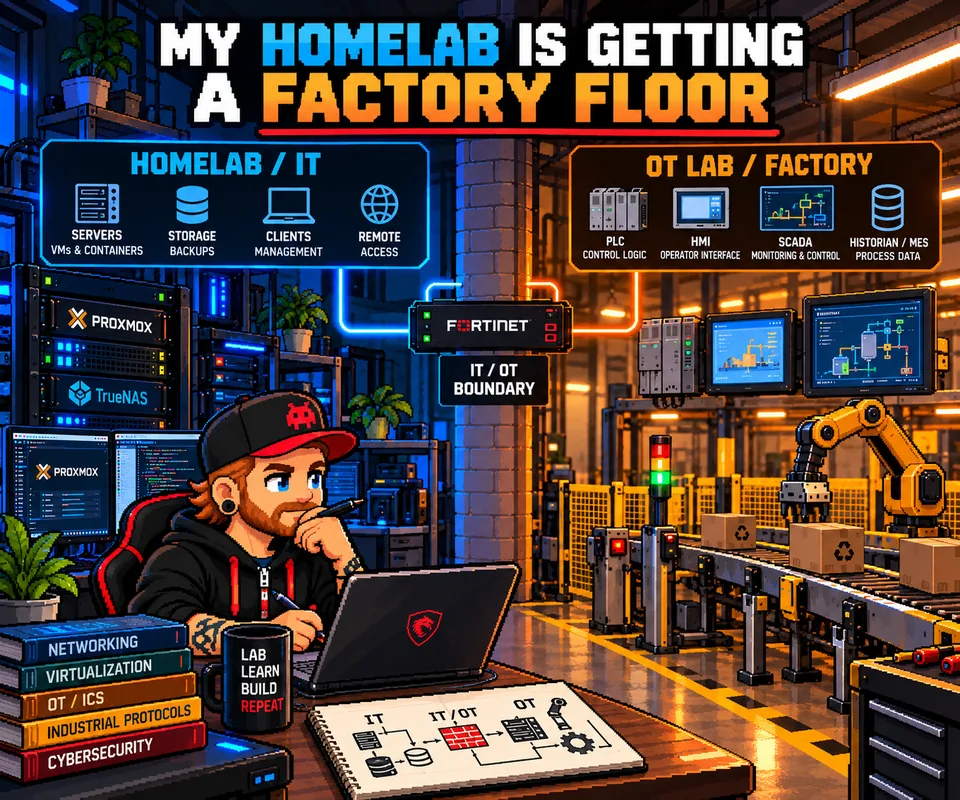
OT, in development
OT Learning Environment
A simulated asset-sorting line with sensors, PLC logic, actuators, HMI, SCADA and a historian, behind a Fortinet IT/OT boundary. Built to test what happens to the process when the network fails.
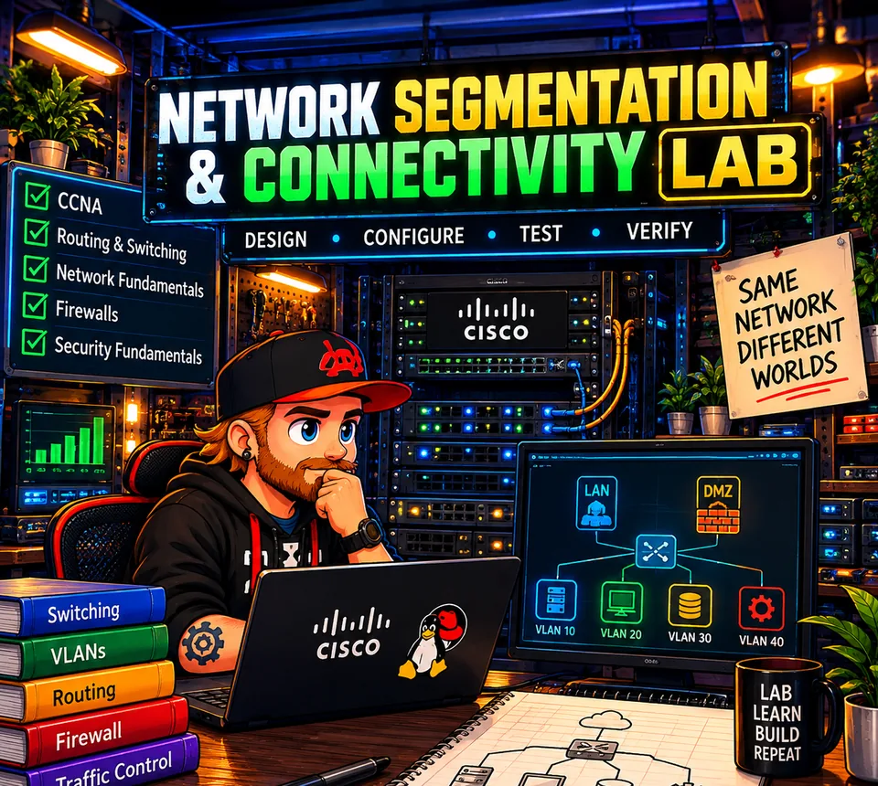
Network, ongoing validation
Network Segmentation and Connectivity
Switching, VLANs, routing and traffic controls, with the topology and how I validate it.
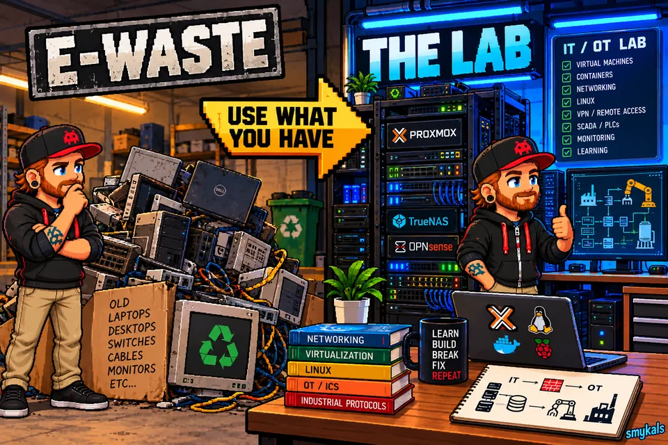
Infrastructure, documented fixes
Access, Storage and AI Hosts
A four-host environment built from retired hardware, and the guest dependencies I've troubleshot.
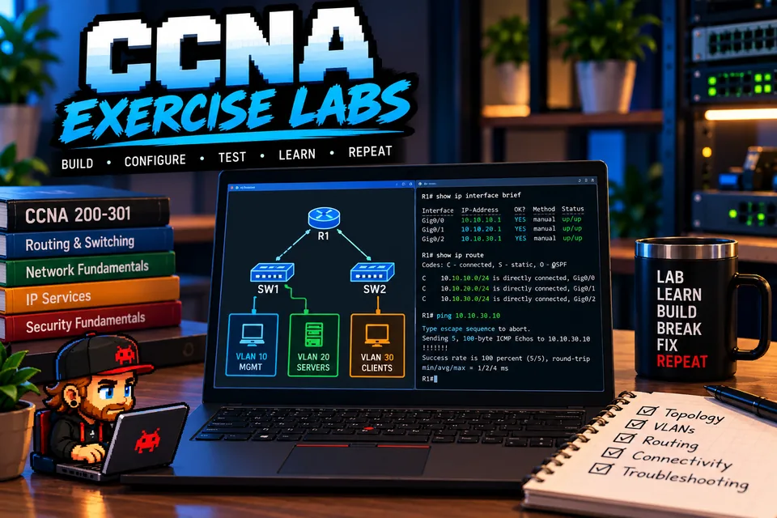
Study, active
CCNA Lab Exercises
Repeatable configuration and fault-isolation exercises.
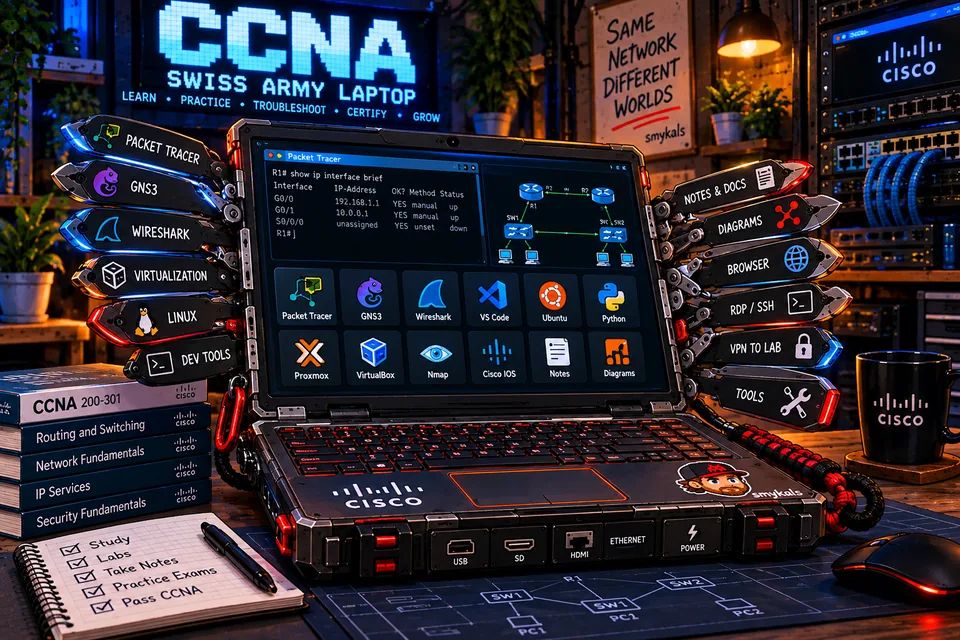
Study, built and in use
CCNA Study Laptop
A Dell Latitude 5480 repurposed as a Parrot OS networking workstation.
Software and AI
Tools I build on top of the lab: a local AI platform, a network monitoring appliance, and an engineering concept for analyzing software.
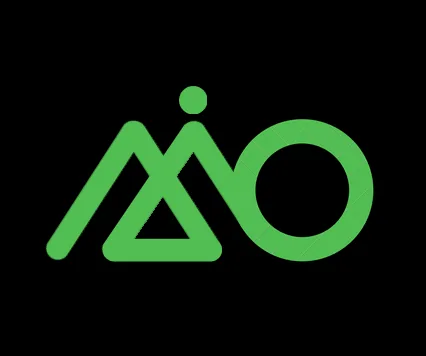
Local AI, deployed and in use
AIIO Station
A CPU-to-GPU migration that became a containerized local AI platform for development, observability and automation.
Read the case study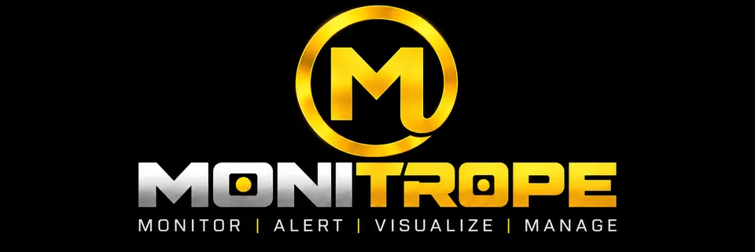
Monitoring, v0.6.0 released
MONITROPE
A network monitoring appliance that discovers devices, learns each one's normal behavior, and traces outages to a probable cause. Installs from its own OS image and updates from signed releases.
Read the case study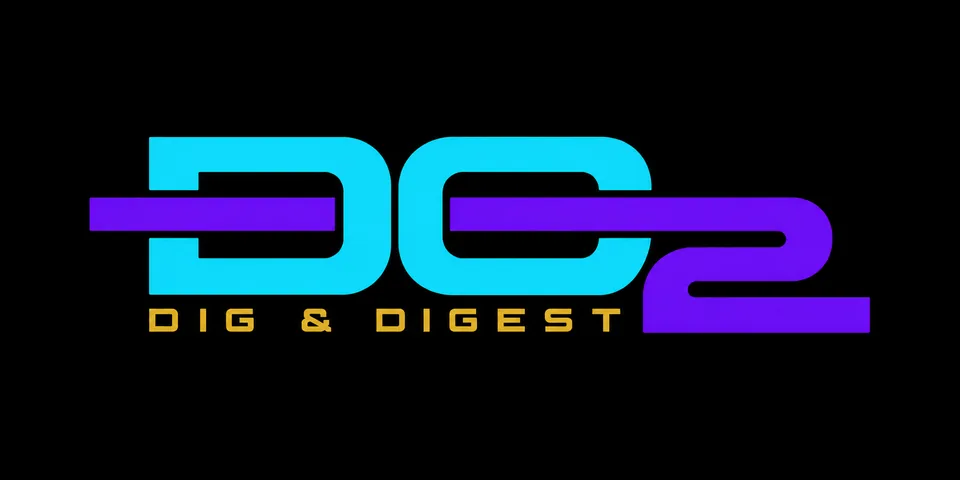
Software, concept and architecture
DO2: Dig & Digest
An engineering concept for analyzing software artifacts with traceable findings.
Explore the conceptField Journal
Notes from the systems I build and the problems I troubleshoot, including the ones that didn't go to plan.
-
{% for post in site.posts limit: 4 %}
- Read
{{ post.title | escape }}
{% if post.description %}{{ post.description | escape }}{% else %}{{ post.excerpt | strip_html | truncate: 160 | escape }}{% endif %}
{% endfor %}
Extras: Networking Games
Browser games I designed and built with AI assistance, each around a networking or infrastructure idea. They all play in your browser.
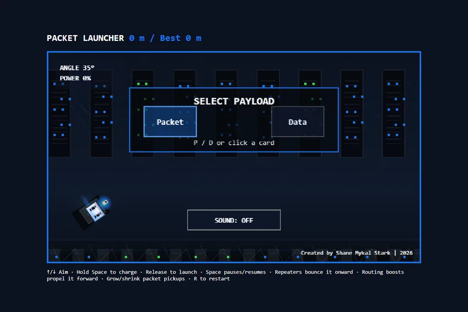
Packet Launcher
Launch a packet toward its destination while network hazards bend its path.
Case studyPlay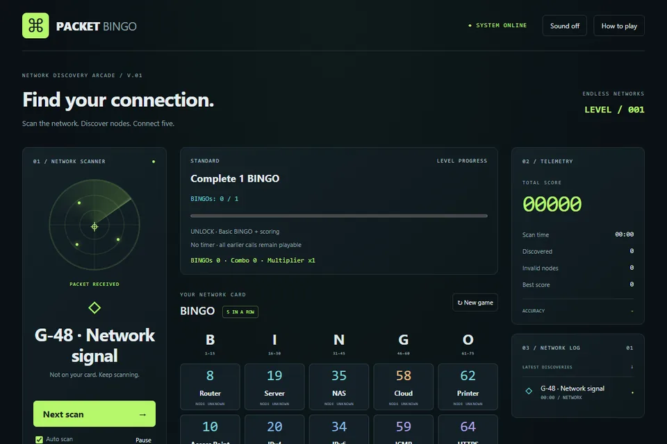
Packet Bingo
Scan for devices and services, mark nodes, and build routes across harder networks.
Case studyPlay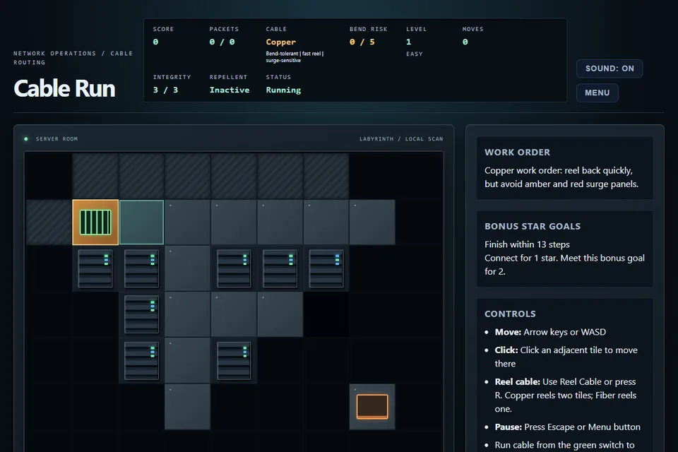
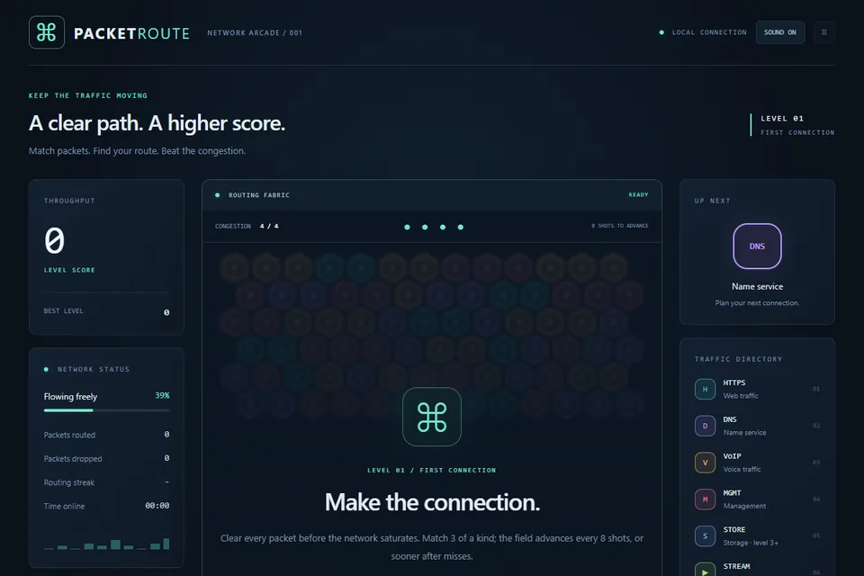
Need Someone to Keep Critical Infrastructure Running?
I'm looking for infrastructure, network, systems, IT/OT, data center and technical leadership roles, hands-on or leading the team. Email is the fastest way to reach me, and my full work history is on LinkedIn.